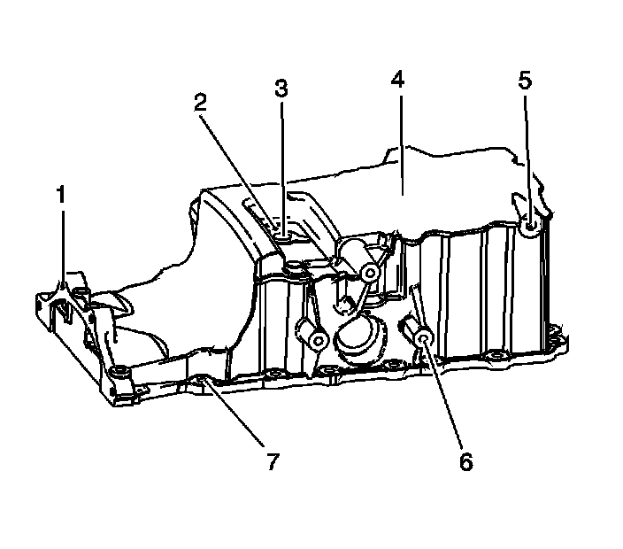
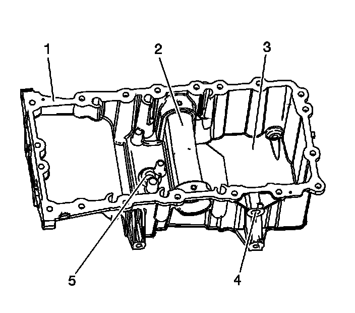

77. Oil Pan Cleaning and Inspection
Oil Pan Cleaning and Inspection
Cleaning Procedure
1. Clean the oil pan components with solvent.
Caution: Refer to Safety Glasses Caution (Safety Glasses Warning) .
2. Dry the oil pan components with compressed air.
Inspection Procedure

1. Inspect the exterior of the oil pan for the following:
* Damage to the transmission mounting hole threads (1)
* Damage to the exterior of the oil pan (2)
* Damage to the oil pan drain plug hole threads (3)
* Damage to the mounting hole threads (4) for the front differential
* Damage to the oil pan bolt holes (5)

2. Inspect the interior of the oil pan for the following:
* Damage to the oil pan gasket sealing surface (1)
* Damage to the oil pan-axle pass through (2)
* Damage or blockage to the oil pan interior (3)
* Damage to the mounting hole threads (4) for the front differential
3. Repair or replace the oil pan as necessary.